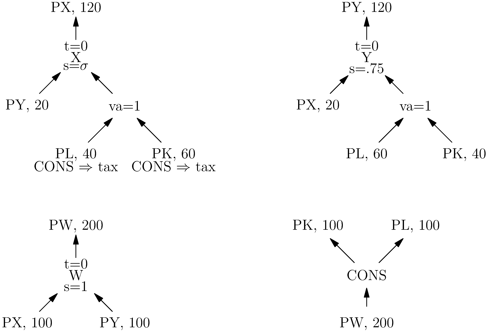

Closed $2\times2$ Economy with Intermediate Inputs and Nesting
This model is available in a notebook file here.
Consider the following social accounting matrix (SAM).
| Markets | X | Y | W | CONS |
|---|---|---|---|---|
| PX | 120 | -20 | -100 | |
| PY | -20 | 120 | -100 | |
| PW | 200 | -200 | ||
| PL | -40 | -60 | 100 | |
| PK | -60 | -40 | 100 |
We are going to use this matrix to construct a simple CES nesting structure that permits the modeler to specify different elasticities of substitution between different groups of inputs.
While the SAM contains the data to build the model, it doesn't specify any structure. To do this we use a tree diagram. For this model we will have four trees: X, Y, W, CONS.

Model Initialization
First we import MPSGE and initialize the model.
using MPSGE
M = MPSGEModel()Defining Variables
This model has:
- Three sectors
X,Y, andW - Five commodities
PX,PY,PW,PL, andPK - One consumer
CONS
Let's add these to the model.
@sectors(M, begin
X
Y
W
end)
@commodities(M, begin
PX
PY
PW
PL
PK
end)
@consumer(M, CONS)We use the plural version of both sector and commodity because we have multiple of each. Each of these variables has been added to the local namespace, so we can type X and it will display X. This is useful as we continue to build the model. These can also be accessed directly from the model, M[:X].
Parameters
In this model we will want a two parameters, tax and σ. This will allow us to apply various shocks without recompiling the model.
@parameters(M, begin
tax, 0
σ, .5
end)The parameter block requires that you set initial values for each parameter.
Production
In this model we will have three production blocks, one for each sector. View the full @production documentation.
We'll detail the X production block as it has the most interesting structure. Here is the full production block,
@production(M, X, [s = σ, t = 0, va => s = 1], begin
@output(PX, 120, t)
@input( PY, 20, s)
@input( PL, 40, va, taxes = [Tax(CONS,tax)])
@input( PK, 60, va, taxes = [Tax(CONS,tax)])
end)there is a lot going on in this, let's break it down piece by piece. The first few pieces, @production(M, X, are self-explanatory, model and sector.
This brings us to [s = σ, t = 0, va => s = 1] which defines the nesting structure. There are two top level nests s and t with respective elasticities of σ and 0. Compare this to the other nest, va, which sits under s, this is denoted with va => s and the = 1 sets the elasticity to 1. One thing to notice is that σ is a previously defined parameter. In general, any quantity can be either a number or parameter.
Finally, @input and @output. These must be wrapped in the begin .. end syntax. The syntax of building an output is the same as an input, so we'll describe an output. The required information is a commodity, quantity, and nest. We have used Julia macro syntax to suppress parentheses and commas, but you could equivalently defined these as
@output(PX, 120, t)Outputs have two possible keywords, reference_price and taxes. reference_price is a simple quantity whereas taxes is an array of Tax objects, as illustrated in the PK input.
The remaining production blocks are similar,
@production(M, Y, [t = 0, s = .75, va => s = 1], begin
@output( PY, 120, t)
@input( PX, 20, s)
@input( PL, 60, va)
@input( PK, 40, va)
end)
@production(M, W, [t = 0, s = 1], begin
@output( PW, 200, t)
@input( PX, 100, s)
@input( PY, 100, s)
end)Demand
Each consumer will have a corresponding demand block. Here is the demand block for CONS
@demand(M, CONS, begin
@final_demand(PW, 200)
end,begin
@endowment(PL, 100)
@endowment(PK,100)
end)The first two inputs are the model and the consumer. Then there are two begin .. end blocks, the first is for final demand and the second is endowments. This may get improved in the future to be a single block.
Solving the Model
To solve the model, you call solve! on the model. You can also pass PATH options view keyword arguments. In this case we are testing the benchmark calibration so we set the cumulative iteration limit to 0.
solve!(M; cumulative_iteration_limit = 0)While the solver output can be useful, it's more useful to see the values and the marginal values. Any non-zero marginal value should be investigated. LINK TO MODEL DEBUGGING INFORMATION HERE.
df_benchmark = generate_report(M)This will return a Julia dataframe, which you can manipulate using any dataframe technique. If you plan to manipulate this dataframe, it will be useful to use the DataFrames package
using DataFrames.jlYou can also retrieve information using standard JuMP functions, for example
value(X)will give you the value of X.
We can solve a counterfactual by changing the value of a parameter. In this case we'll also fix PW to 1 to pin a specific solution.
fix(PW,1)
set_value!(tax,.5)
solve!(M)
df = generate_report(M)